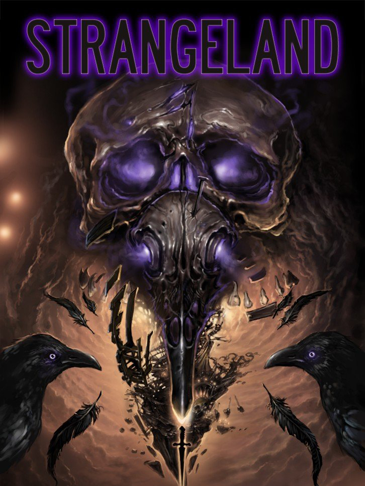

Strangeland
Strangeland
Details
|  | |
| Playtime | 3h 56m 0s |
| Last Activity | 2022-02-22 23:24:29 |
| Added | 2023-08-11 0:29:08 |
| Modified | 2025-10-02 10:31:11 |
| Completion Status | Completed |
| Library | Steam |
| Source | Steam |
| Platform | Macintosh PC (Linux) PC (Windows) |
| Release Date | 2021-05-25 |
| Community Score | 78 |
| Critic Score | 76 |
| User Score | |
| Genre | Adventure Point-and-click |
| Developer | Wormwood Studios |
| Publisher | Wadjet Eye Games |
| Feature | Single Player |
| Links | Steam Official Website GOG Twitch YouTube Discord Bluesky |
| Tag | Adventure Atmospheric Conversation Dark Exploration Horror Linear Multiple Endings Narration Narrative Philosophical Pixel Graphics Point & Click Psychological Psychological Horror Singleplayer Story Rich Surreal |
Description

You awake in a nightmarish carnival and watch a golden-haired woman hurl herself down a bottomless well for your sake. You seek clues and help from jeering ravens, an eyeless scribe, a living furnace, a mismade mermaid, and many more who dwell within the park. All the while, a shadow shrieks from atop a towering roller-coaster, and you know that until you destroy this Dark Thing, the woman will keep jumping, falling, and dying, over and over again....

Strangeland is a classic point-and-click adventure that integrates a compelling narrative with engaging puzzles. For almost a decade, we've been working on a worthy successor to the fan-acclaimed Primordia, and we are proud, at long last, to share our second game.
Strangeland is a place like no other. Even in the real world, carnivals occupy a twilight territory between the fantastic and the mundane, the alien and the familiar. In their funhouse mirrors, their freaks, and their frauds, we see hideous and haunting reflections of ourselves, and we witness the wonder and horror of humanity in just a few frayed tents, peeling circus wagons, dingy booths, and run-down rides. Strangeland, of course, is most definitely not the real world. Indeed, unraveling the connections between this nightmare and the real world is the game's central mystery, and finding a way out is its central challenge.
As you explore Strangeland, you will need to gather otherworldly tools and win strange allies to overcome a daunting array of obstacles. Forge a blade from iron stolen from the jaws of a ravenous hound and hone it with wrath and grief; charm the eye out of a ten-legged teratoma; and ride a giant cicada to the edge of oblivion.... Amidst such madness, death itself has no grip on you, and you will wield that slippery immortality to gain an edge over your foes.
Navigating this domain of monsters and metaphors will require understanding its denizens and its enigmas. Unlike many adventure games that offer a linear experience and single-solution puzzles, Strangeland lets you pick your own way, your own approach, and your own meaning—one player might win a carnival game with sharpshooting, another by electrical engineering; one player might unravel a strange prophet's wordplay while another gathers visual clues scattered throughout the environment. Ultimately, Strangeland's story will be your story. You are not the audience; you are the player.


- Approximately five hours of gameplay, replayable thanks to different choices, different puzzle solutions, and different endings
- Breathtaking pixel art in twice Primordia's resolution (640x360—party like it's 1999!)
- Dozens of rooms to explore, with variant versions as the carnival grows ever more twisted
- An eccentric cast, including a sideshow freak, a telepathic starfish, an animatronic fortune-teller, and a trio of masqueraders
- Full, professional voice over and hours of original music
- A rich, thematic story about identity, loss, self-doubt, and redemption
- Integrated, in-character hint system (optional, of course)
- Hours of developer commentary and an "annotation mode" (providing on-screen explanations for the references woven throughout the game)


At Wormwood Studios, we make games out of love—love for the games we've spent our lifetimes playing, love for the games we ourselves create, and love for the players who have made all of those games possible. We know that players invest not just their money and time in the games they play, but also their hope and enthusiasm. And we want to make sure that players receive a rich return on that investment by creating games that provide not only a fun, challenging diversion for a few hours, but also lasting memories to keep for years.
We think the best way to achieve that with Strangeland is to adhere to the genius of the adventure genre: the marriage of challenging puzzles and thrilling exploration, on the one hand, with an engaging narrative, on the other. At the same time, we've tried to remove the punitive aspects of adventure games (deaths, dead ends, illogical puzzles, pixel hunting, backtracking, etc.). Within this framework, we add uncanny visuals, memorable characters, and thought-provoking themes. The result for Primordia was a game that has received thousands of positive player reviews, and we have refined our approach further with Strangeland. We hope it will not disappoint the players who have given us such great support and encouragement over the years! And we hope that it will find a place in the hearts of new players as well.